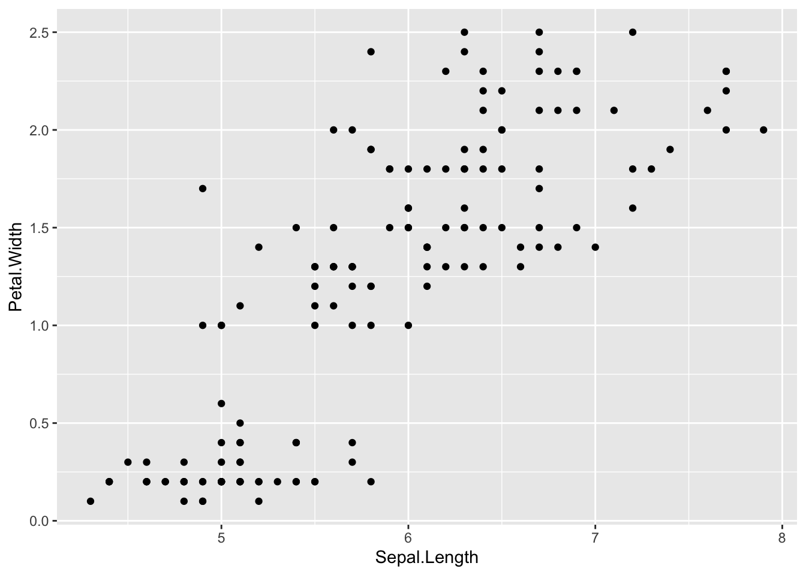
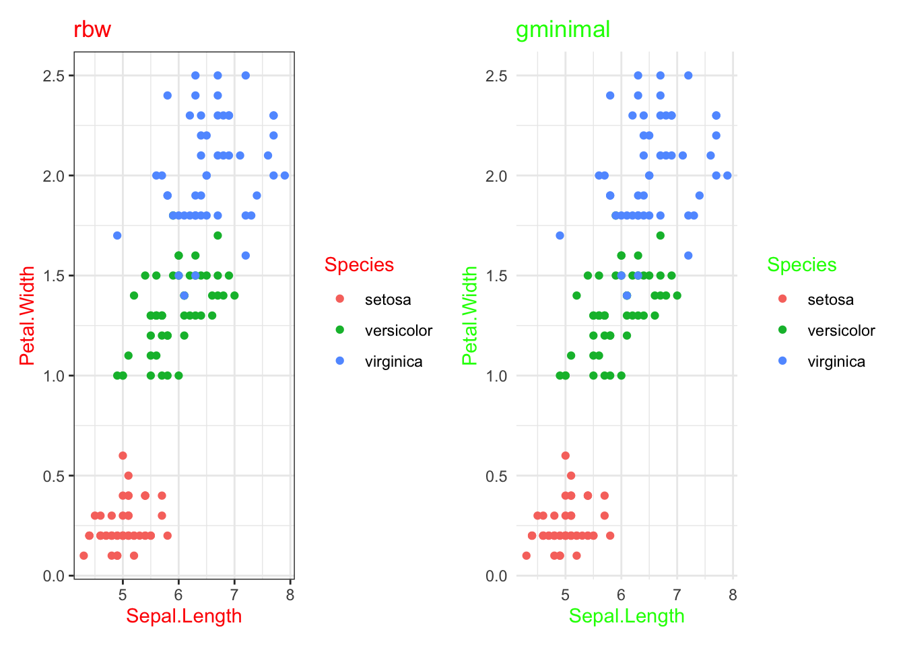
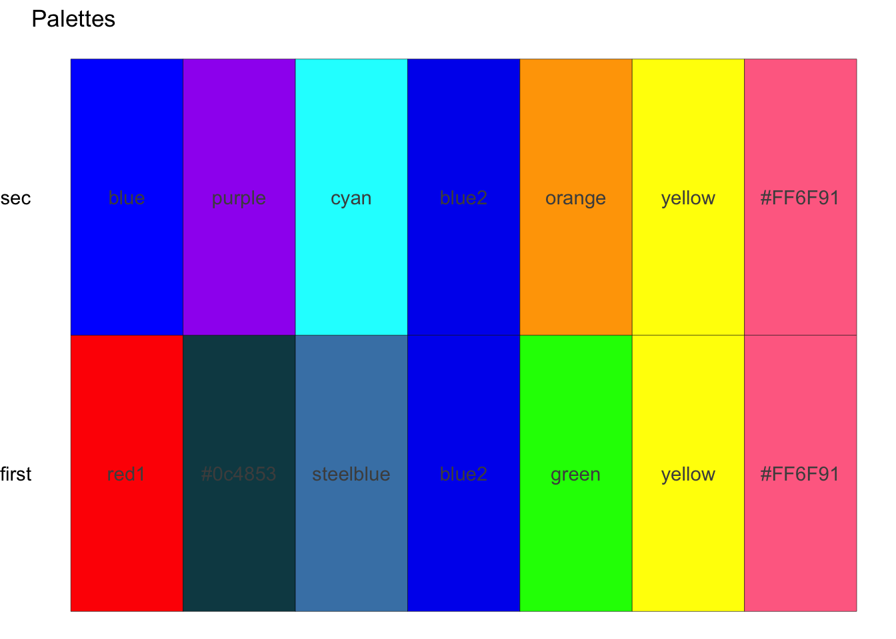
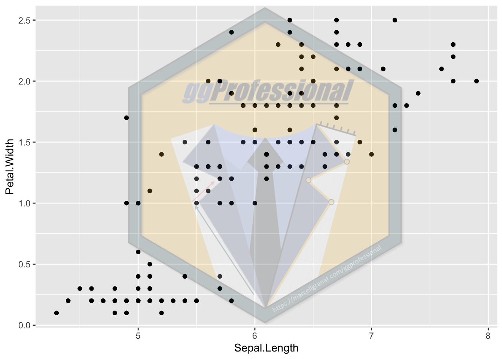
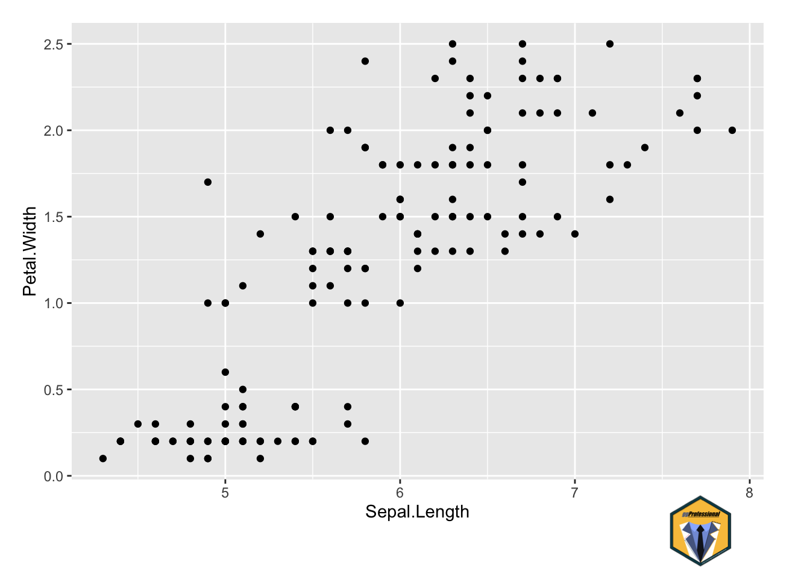

This package is helpful for those who regularly use the {ggplot2} package to perform their daily institutional tasks.
ggProfessional
Overview
Based on my several years of experience in the research, the private and the public sector, this package is helpful for those who regularly use the {ggplot2} package to perform their daily institutional tasks.
ggProfessional helps you with:
exporting all your plots
manage themes and palettes
add your logo or watermark to the figures
Installation
ggProfessional is not available in the CRAN, since it does not satisfy the requirements (saves into your wd, creates global variables to work with gg elements), and it is built on packages that are not available on CRAN.
install.packages("devtools")
devtools::install_github("MarcellGranat/ggProfessional")Usage
Export
As you load the package, two functions are immediately assigned to your global environment: - & .gg_finalise (hidden).
library(ggProfessional)ls()[1] "-.gg"-.gg is taken from the following SW solution. It allows you to use a function on a gg object, without assigning in. I recommend you to add - .gg_finalise to all your gg code blocks at the end, by default it will return the plot, without any modification, but if you later update the .gg_finalise function, you can specify your saving method, and it will be used to all your figures.
Combine this with the plot_to
library(ggplot2)
ggplot(iris, aes(Sepal.Length, Petal.Width)) +
geom_point() - # <
.gg_finalise # no brackets!
.gg_finalise <<- function(plot = ggplot2::last_plot()) {
plot_to_ppt(plot) # save all plots into one ppt file
plot_to_excel(plot) # save all plots into one excel file (as table)
plot_to_csv(plot) # save all plots into separate csv files (as table)
plot
}
Manage themes and palettes
Set theme for ggplot figures was already built in the {ggplot2} package. In this field I can only extend that with the register_theme/available_themes/get_theme functions. This help you to save your theme and reuse that in all of your projects.
register_theme(ggplot2::theme_bw() + theme(title = element_text(color = "red")), name = "rbw")
register_theme(ggplot2::theme_minimal() + theme(title = element_text(color = "green")), name = "gminimal")available_themes()
Similarly you have these functions for palettes. But set_palette will create a .co hidden function that helps you to easily use your own palette (e.g. .co(1:2) returns the first two colors in your palette, but you can also use named colors.). set_palette can also register the colors as default.
register_palette(c("red1", "#0c4853", "steelblue", "blue2", "green", "yellow", "#FF6F91"), name = "first")
register_palette(c("blue", "purple", "cyan", "blue2", "orange", "yellow", "#FF6F91"), name = "sec")available_palettes()
set_palette("first").co(1:3)[1] "red1" "#0c4853" "steelblue"Note: If you set attach = TRUE, then colors on all ggplot figures will be automatically updates with this palette.
Logos
You can register your institutional logos (saved only locally) and reuse in every project.
register_logo(path = "logo.png", "ggp") # example[1] TRUEggplot(iris, aes(Sepal.Length, Petal.Width)) +
geom_point() +
watermark_logo("ggp", alpha = .2)
ggplot(iris, aes(Sepal.Length, Petal.Width)) +
geom_point() -
corner_logo